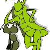
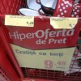

În anii ’90, ţărăniştii publicau Dreptatea, “organ al PNŢ-CD”. PNL-ul avea drept “oficios” gazeta Liberalul, iar ziarul Azi se definea, onest şi transparent, drept cotidianul Frontului Salvării Naţionale (FSN). 20 de ani mai târziu, jurnalele asumat partizane au dispărut fără urmă, iar mass-media s-a umplut de independenţi obiectivi care clamează, care mai de care, deontologia [...]

Monica merge la referendum cu bikini tricolori, care se poartă în vara asta. În caz că aveţi chef să agăţaţi ceva, trebuie să ştiţi că Monica spune “DA”. Participării la referendum. Domnişoara vă invită la vot şi zice că-i timpul să experimentaţi ceva nou faceţi o schimbare, pentru ele. Căci sunt mai multe, după cum [...]

Când era mic, nişte părinţi inconştienţi i-au băgat în cap băiatului regula celor patru C: în viaţă trebuie să fii cuviincios, conştiincios, corect şi competent. Aşa s-a “c-c-it” prin şcoală, adunând note de 10, premii la olimpiade, plus nenumărate înjurături de la colegii mai puţin cuviincioşi şi deloc conştiincioşi. Bonus, la ofertă, doi dinţi sparţi [...]

Nicolae Bădiţă a fost profesor de limba română într-un sat. Are 85 de ani şi e pensionar. Dar nu dintre aceia care se calcă în picioare pentru o porţie de sarmale electorale gratuite. Nu, olteanul Nicolae Bădiţă n-are vreme să se plângă de pensia mică şi să-i înjure pe guvernanţi. E ocupat să-i înveţe pe [...]

“Bă străinezule, eu te-am ajutat să schimbi şi acuma mă faci hoţ? Cine te-a trimis să-mi strici firma?” Îi ştiţi pe băieţii tuciurii care agaţă străini naivi, propunându-le un schimb valutar avantajos? Slinoşi şi alunecoşi, indivizii cu “ceingi – ceingi” înlocuiesc într-o clipită bancnotele pe care victima le-a numărat cu fâşii de ziar, apoi susţin [...]

Produse hiper-multe, preţuri hiper-mici, promoţii hiper-mişto şi mai ales o echipă de hiper-profesionişti dornică să-ţi facă experienţa cumpărăturilor hiper-reuşită. Bine (că) aţi venit la hipermarketul românesc. Misterele bazarului criptat După cum spune la reclamă, locul cu pricina e visul gospodinelor, plin cu toate felurile de produse: de la frigidere, la beţişoare de urechi şi de [...]

29 iulie va fi o zi veselă. În ziua referendumului, USL scoate în stradă clovni cu baloane şi zâne cu biciclete, dă cartele telefonice, îmbăiere gratuită la ştrand şi bilete la concert. Academicienii pomenilor electorale, liderii Uniunii Social Liberale, au poruncit supuşilor din teritoriu să organizeze tombole cu premii pentru alegătorii care nu văd în capul [...]
Cu cât e mai tolomac românul, cu atât se înghesuie mai abitir să voteze. Dacă atestarea instruirii ar fi un proces democratic, atunci cei mai slabi la învăţătură ar deveni – automat – cei mai titraţi români. I-ar vota rudele, prietenii şi vecinii. Pentru că există o corelaţie evidentă între exercitarea dreptului de vot şi [...]
ile")
Se mai poate copia la BAC? S-a terminat cu fraudele la examenul de Bacalaureat? Se mai ia BAC-ul pe şpagă şi pile sau reducerea promovabilităţii la doar 44% e rezultatul unei organizări impecabile, care nu lasă elevilor trişori nicio şansă? Au dispărut plicurile cu bani pentru profesorii supraveghetori ori evaluatori, presiunile de la Inspectorat şi Minister? [...]

Nesimţirea şoferilor bucureşteni l-a enervat până şi pe Ambasadorul SUA la Bucureşti, Mark Gitenstein. Aşa că oficialul american s-a decis să sprijine un portal dedicat ridiculizării conducătorilor auto care îşi lasă căruţa în drum parchează autovehiculul ilegal, blocând trotuarul, pistele de biciclişti sau chiar traficul rutier. Iniţiatorii proiectului hărţii şoferilor cu tupeu din Capitală speră că [...]

Suntem în posesia versiunii necenzurate a filmului întâlnirii dintre Victor Ponta şi reprezentanţii Uniunii Europene! Spectacolul captivant din spatele uşilor închise a decis soarta României pe termen mediu. Numai “Puie Monta” nu i-au spus oficialii comunitari premierului român care s-a auto-invitat la Bruxelles, dornic să dea explicaţii. În rest, mesajul Comisiei Europene pentru puterea de [...]

“Năstasometrul” empatic, instrumentul popular pe care l-am propus pentru a simplifica enigma împuşcăturilor din strada Zambaccian, a ajuns la final. Sub 5% dintre cititorii ACRU.ro sunt predispuşi la sinucidere, în condiţiile în care ar fi miliardari, majoritatea covârşitoare (aproape 70%) optând pentru varianta mai relaxantă, un concediu viager într-o ţară cu care România nu are [...]